渗透测试-实验二
实验二 网络嗅探与身份认证
红色部分无需打印，套用实验报告模板（实验原理）
实验目的
通过使用Wireshark软件掌握Sniffer（嗅探器）工具的使用方法，实现捕捉HTTP等协议的数据包，以理解TCP/IP协议中多种协议的数据结构、通过实验了解HTTP等协议明文传输的特性。
研究交换环境下的网络嗅探实现及防范方法，研究并利用ARP协议的安全漏洞，通过Arpspoof实现ARP欺骗以捕获内网其他用户数据。
能利用BrupSuite实现网站登录暴力破解获得登录密码。
能实现ZIP密码破解，理解安全密码的概念和设置。
系统环境
Kali Linux 2、Windows
网络环境
交换网络结构
实验工具
Arpspoof、WireShark、BurpSuite、fcrackzip（用于zip密码破解）。
实验原理
网络嗅探
- 网络嗅探概述
Sniffer（嗅探器）工作在OSI模型的第二层，利用计算机的网卡截获网络数据报文的一种工具，可用来监听网络中的数据，分析网络的流量，以便找出所关心的网络中潜在的问题。例如,假设网络的某一段运行得不是很好,报文的发送比较慢,而我们又不知道问题出在什么地方,此时就可以用嗅探器确定不同网络协议、不同用户的通信流量，相互主机的报文传送间隔时间等，这些信息为管理员判断网络问题、管理网络区域提供了非常宝贵的信息。
在正常情况下，一个合法的网络接口应该只响应这样的两种数据帧：帧的目标区域具有和本地网络接口相匹配的硬件地址；帧的目标区域具有“广播地址”。
如果网卡处于混杂（promiscuous）模式，那么它就可以捕获网络上所有的数据帧，处于对网络的“监听”状态，如果一台机器被配置成这样的方式，它（包括其软件）就是一个嗅探器。
在交换型以太网中，上述条件2是不满足的。所有的主机连接到SWITCH，SWITCH比HUB更聪明，它知道每台计算机的MAC地址信息和与之相连的特定端口，发给某个主机的数据包会被SWITCH从特定的端口送出，而不是象HUB那样，广播给网络上所有的机器。这种传输形式使交换型以太网的性能大大提高，同时还有一个附加的作用：使传统的嗅探器无法工作。
交换型网络环境嗅探的核心问题是：如何使本不应到达的数据包到达本地。通常的方法有MAC洪水包和ARP欺骗。其中MAC洪水包是向交换机发送大量含有虚构MAC地址和IP地址的IP包，使交换机无法处理如此多的信息，致使交换机就进入了所谓的”打开失效”模式，也就是开始了类似于集线器的工作方式，向网络上所有的机器广播数据包。
- ARP欺骗
本实验中，我们将要详细分析ARP欺骗模式，并通过ARP欺骗达到交换网络嗅探的目的。
每一个主机都有一个ARP高速缓存，此缓存中记录了最近一段时间内其它IP地址与其MAC地址的对应关系。如果本机想与某台主机通信，则首先在ARP高速缓存中查找此台主机的IP和MAC信息，如果存在，则直接利用此MAC地址构造以太帧；如果不存在，则向本网络上每一个主机广播一个ARP请求报文，其意义是”如果你有此IP地址，请告诉我你的MAC地址”，目的主机收到此请求包后，发送一个ARP响应报文，本机收到此响应后，把相关信息记录在ARP高速缓存中，以下的步骤同上。
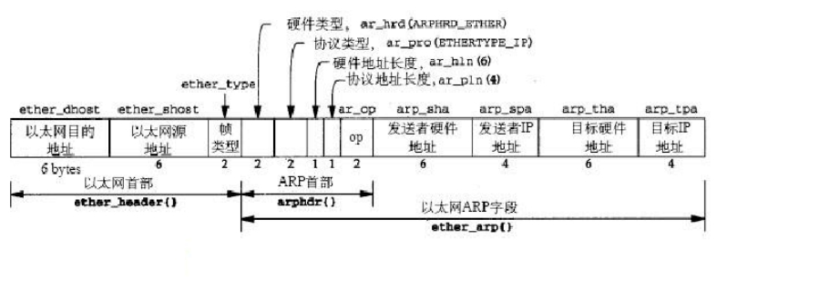
ARP报文格式
可以看出，ARP协议是有缺点的，第三方主机可以构造一个ARP欺骗报文，而源主机却无法分辨真假。如果发送者硬件地址字段填入攻击者的硬件地址，而发送者IP地址填入被假冒者的IP地址，那么就构造出了一个用于欺骗的ARP请求报文。那么被欺骗主机的ARP高速缓存，被假冒者的IP地址与其MAC地址的对应关系就会更改为欺骗者的，从而达到ARP欺骗的目的。特别的，如果攻击者冒充网关，将转发子网内到外网的所有通信量，以达到捕获其他主机的通信量，从而破坏数据传输的保密性。
- 密码（口令，Password）安全
在现实网络中，攻击事件发生的频率越来越高，其中相当多的都是由于网站密码泄露的缘故，或是人为因素导致，或是口令遭到破解，所以从某种角度而言，密码的安全问题不仅仅是技术上的问题，更主要的是人的安全意识问题。
3.1 口令破解方法
口令破解主要有两种方法：字典破解和暴力破解。
字典破解是指通过破解者对管理员的了解，猜测其可能使用某些信息作为密码，例如其姓名、生日、电话号码等，同时结合对密码长度的猜测，利用工具来生成密码破解字典。如果相关信息设置准确，字典破解的成功率很高，并且其速度快，因此字典破解是密码破解的首选。
而暴力破解是指对密码可能使用的字符和长度进行设定后（例如限定为所有英文字母和所有数字，长度不超过8），对所有可能的密码组合逐个实验。随着可能字符和可能长度的增加，存在的密码组合数量也会变得非常庞大，因此暴力破解往往需要花费很长的时间，尤其是在密码长度大于10，并且包含各种字符（英文字母、数字和标点符号）的情况下。
3.2 口令破解方式
口令破解主要有两种方式：离线破解和在线破解。
离线破解攻击者得到目标主机存放密码的文件后，就可以脱离目标主机，在其他计算机上通过口令破解程序穷举各种可能的口令，如果计算出的新密码与密码文件存放的密码相同，则口令已被破解。
3.3 候选口令产生器
候选口令产生器的作用是不断生成可能的口令。有几种方法产生候选口令，一种是用枚举法来构造候选口令（暴力破解），另一种方法是从一个字典文件里读取候选口令（字典破解）。
3.4 口令加密
口令加密过程就是用加密算法对从口令候选器送来的候选口令进行加密运算而得到密码。这要求加密算法要采用和目标主机一致的加密算法。加密算法有很多种，通常与操作系统或应用程序的类型和版本相关。
Burp Suite是一个用于测试Web应用程序安全性的图形工具。该工具使用Java编写，由PortSwigger Security开发。该工具有两个版本。可免费下载的免费版（免费版）和试用期后可购买的完整版（专业版）。免费版本功能显着降低。它的开发旨在为Web应用程序安全检查提供全面的解决方案，Burp Suite是进行Web应用安全测试集成平台。它将各种安全工具无缝地融合在一起，以支持整个测试过程中，从最初的映射和应用程序的攻击面分析，到发现和利用安全漏洞。
实验步骤和内容
网络嗅探部分
网络嗅探：Wireshark 监听网络流量，抓包。
ARP欺骗： ArpSpoof，实施ARP欺骗。
防范： 防范arp欺骗。
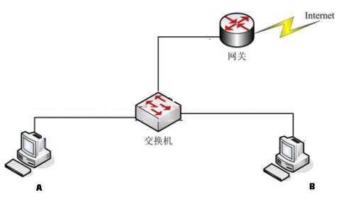
实验网络拓扑
- A主机上外网，B运行sinffer(Wireshark)选定只抓源为A的数据)。
1.1 写出以上过滤语句。
ip.src A的ip
1.2 B是否能看到A和外网的通信（A刚输入的帐户和口令）？为什么？
不能，A和外网通信的信息只通过和网关建立起A和外网的联系，此通信过程不经过B。A和B之间的通信只存在局域网内。
2.1 为了捕获A到外网的数据，B实施ARP欺骗攻击，B将冒充该子网的什么实体？
网关
2.2 写出arpspoof命令格式。
1 | arpspoof -i 网卡名称 -t 目标主机A的ip 网关的ip |
2.3 B是否能看到A和外网的通信（A刚输入的帐户和口令）？
能，当A给网关发送数据的时候，B冒充网关，将网关的MAC地址换成自己的MAC地址，当B发送arp响应包给A时，内容为网关的ip地址和自己的MAC地址，使得A将网关的ip对应B的MAC地址记录到自己的arp缓存表里。当A发送数据的时候，根据MAC地址，本该发送给网关的数据发送给了攻击者B。从而实现arp欺骗，截取到A和网关之间通信的数据。
arp欺骗实现过程：
环境：两台虚拟机，nat模式
被攻击者： win7 192.168.233.130
攻击者： kali 192.168.233.128 mac: 00:0c:29:6d:df:84
网关： 192.168.233.2 mac: 00:50:56:ed:16:b7
首先启动断网攻击
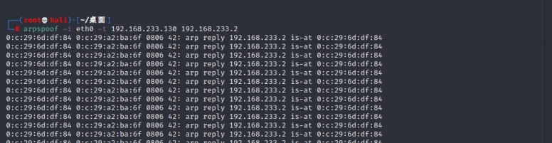
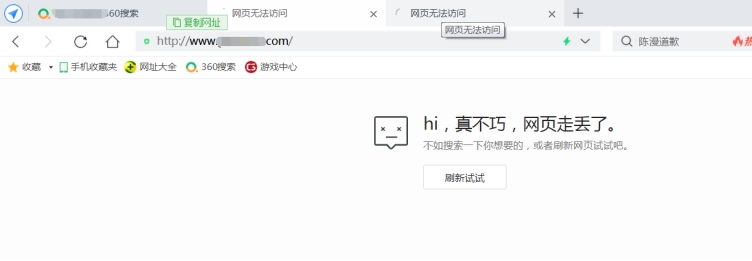
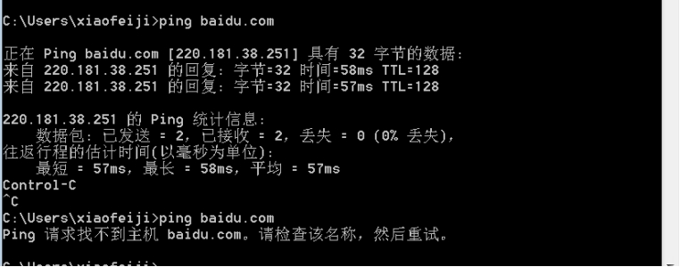
断网攻击后ping百度失败。
网关的mac地址被替换：
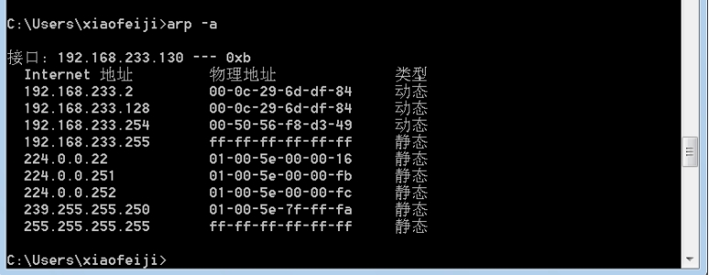
开启流量转发
1 | echo 1 > /proc/sys/net/ipv4/ip_forward |
Kali默认不开启流量转发，默认值为0.
输入命令进行攻击：
1 | arpspoof -i the0 -t 192.168.233.130 192.168.233.2 |
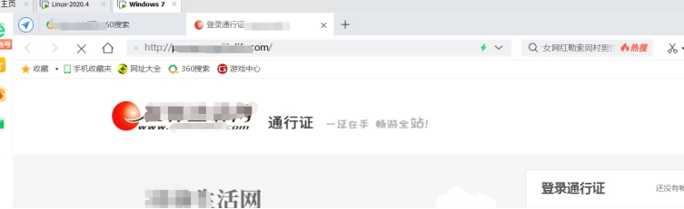
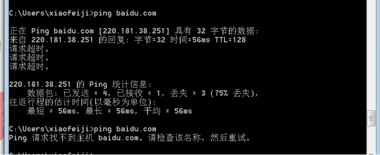
同时开启wireshark抓包：
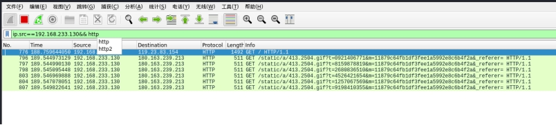
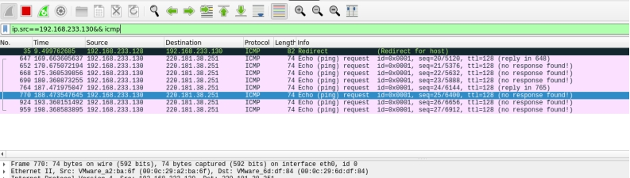
2.4 在互联网上找到任意一个以明文方式传递用户帐号、密码的网站，截图Wireshark中显示的明文信息。
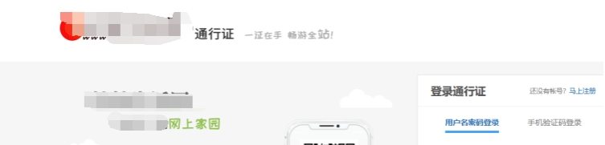
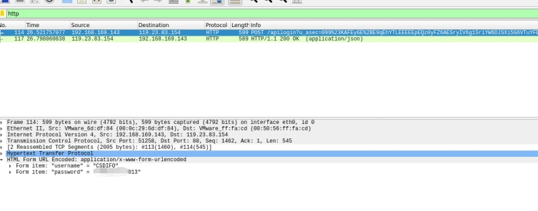
- FTP数据还原部分：利用WireShark打开实验实验数据data.pcapng。
3.1 FTP服务器的IP地址是多少？你是如何发现其为FTP服务器的？
ip: 192.168.182.1
PASV模式，是客户端通过PASV命令来告诉服务器端，想使用PASV方式传输数据。服务器收到命令之后，主动在服务器端建立一个数据端口的TCP/IP监听，并把这个数据端口号返回客户端。在进行文件传输的操作时，客户端去连接服务器端的这个数据端口，进行数据传输。
表明了，这个客户机向服务器发送了监听，告诉服务器想使用pasv 的方式进行连接
服务器回答为进入主动的连接模式，表示要服务器主动跟客户机连接
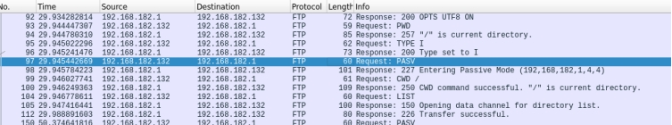
3.2客户端登录FTP服务器的账号和密码分别是什么?
账号：student
密码：sN46i5y
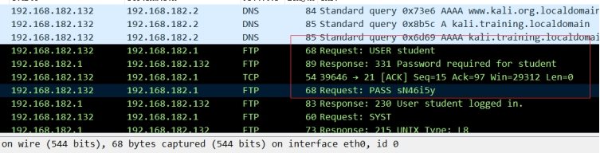
3.2 客户端从FTP下载或查看了2个文件，一个为ZIP文件，一个为TXT文件，文件名分别是什么？提示：文件名有可能是中文。
1.zip 复习题.txt
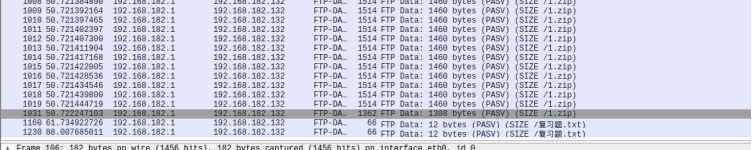
3.3
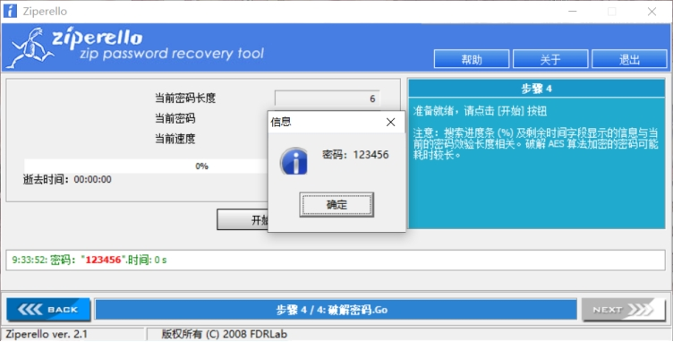
还原ZIP文件并打开（ZIP有解压密码，试图破解，提示：密码全为数字，并为6位）。截图破解过程。
3.4 TXT文件的内容是什么？
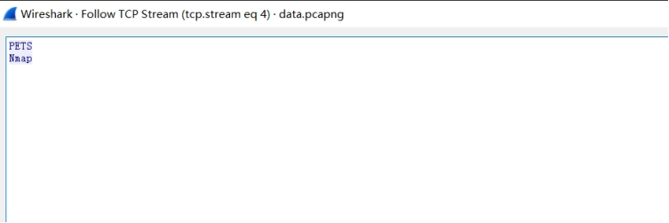
网站密码破解部分
利用人们平时常用的词、句破译，如果说暴力破解是一个一个的尝试那么字典破译就是利用人们习惯用人名、地名或者常见的词语设置成密码的习惯进行破译。字典破译速度比暴力破译更快但是有时候密码设置中包含了没有字典库中的词句就无法破解出来了，因此有好的字典是关键。
以*为目标网站，构造字典（wordlist），其中包含你的正确密码，利用burpsuite进行字典攻击，实施字典攻击，你是如何判断某个密码为破解得到的正确密码，截图。
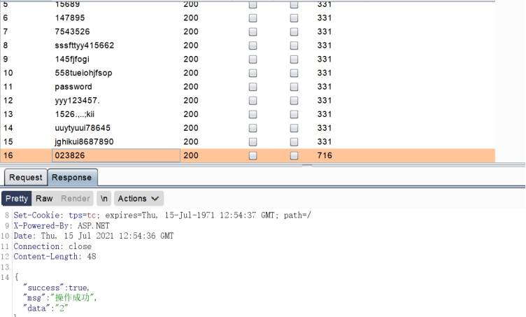
观察长度的变化。
- MD5破解
SqlMap得到某数据库用户表信息，用户口令的MD5值为7282C5050CFE7DF5E09A33CA456B94AE
那么，口令的明文是什么？（提示：MD5值破解）
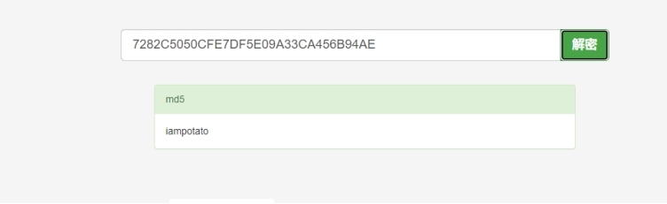
- John the Ripper的作用是什么？
用于在已知密文的情况下尝试破解出明文的破解密码软件，支持目前大多数的加密算法，如DES、MD4、MD5等。它支持多种不同类型的系统架构，包括Unix、Linux、Windows、DOS模式、BeOS和OpenVMS，主要目的是破解不够牢固的Unix/Linux系统密码。
思考问题
- 谈谈如何防止ARP攻击。
ARP欺骗是通过重复应答实现的，那么只需要在本机添加一条静态的ARP映射，这样就不需要询问网关MAC地址了，这种方法只对主机欺骗有效。对于网关欺骗还需要在网关中也添加一条到主机的静态ARP映射。
- 安全的密码（口令）应遵循的原则。
密码应当设置为数字、大小写字母和符号结合的强密码类型，防止密码容易被爆破。
- 谈谈字典攻击中字典的重要性。
攻击中，字典数据越多，可用数据越强大，爆破得到正确结果的可能性就越大，对于爆破的结果有非常重要的帮助。
- 实验小结。
通过本节实验，我了解到了ip地址和MAC地址之间的关系，arp协议和arp欺骗的内容，了解了网关、路由器、网络连接的一些基础知识，以及局域网、网段等名词的解释。知道arp地址解析协议实质上就是将ip地址翻译成为MAC地址，且arp协议传输发生在局域网内。
对于Wireshark的利用，也从以前的只会导出http对象等到通过实验初步了解了ftp文件传输协议的一些过滤用法，ftp,ftp-data，保存原始数据等，了解到wireshark抓包查看ftp的主动和被动模式，主动模式一般由客户端发起port命令，并告诉服务器连接对应端口进行数据传输；
被动模式是PASV模式，是客户端通过PASV命令来告诉服务器端，想使用PASV方式传输数据。服务器收到命令之后，主动在服务器端建立一个数据端口的TCP/IP监听，并把这个数据端口号返回客户端。在进行文件传输的操作时，客户端去连接服务器端的这个数据端口，进行数据传输。表明了，这个客户机向服务器发送了监听，告诉服务器想使用pasv 的方式进行连接服务器回答为进入主动的连接模式，表示要服务器主动跟客户机连接。
把arp欺骗的过程也再熟悉了一遍，通过wireshark的抓包能对协议的使用更加清晰。